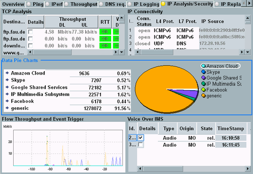

The results are displayed in an overview and in several detailed views. The overview summarizes the most important results. If you are interested in a specific part of the overview, expand this part by opening the related detailed view.
For a description of the individual results, refer to the detailed view sections.

Use the "Select View" hotkey to display a specific detailed view or to return to the overview.
Alternatively, you can select a part of the overview and press ENTER or the rotary knob to open the related detailed view.
The "Assign View" hotkey enables/disables the individual detailed views. Disabled views are hidden and also the related parts of the overview are hidden.
For most views, the setting can only be changed if the measurement is not running (OFF or RDY).
For some views, you can change the setting while the measurement is running. The contents of such views are available in the background and you can enable the views any time to see the measurement results.
Remote command:Stores the IP analysis result database to a JSON file on the R&S CMW system drive.
Remote command:Turn the measurement on or off using the [ON | OFF] or [RESTART | STOP] keys. Alternatively, right-click the "IP Analys./Sec." softkey.
The softkey shows the current measurement state. Additional measurement substates can be retrieved via remote control.
Remote command: